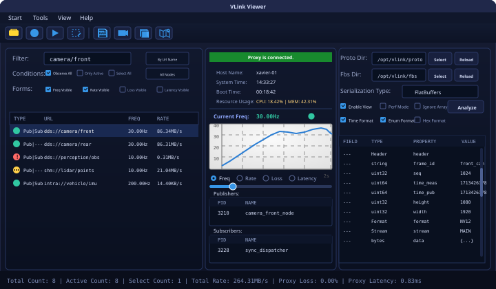
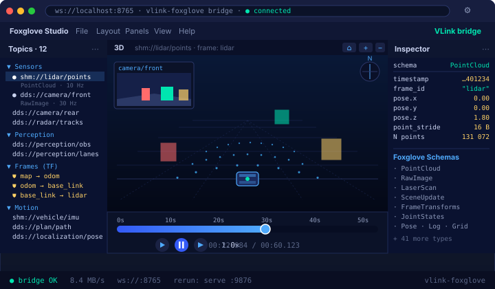
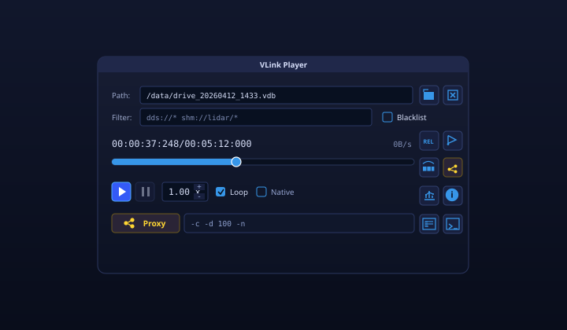
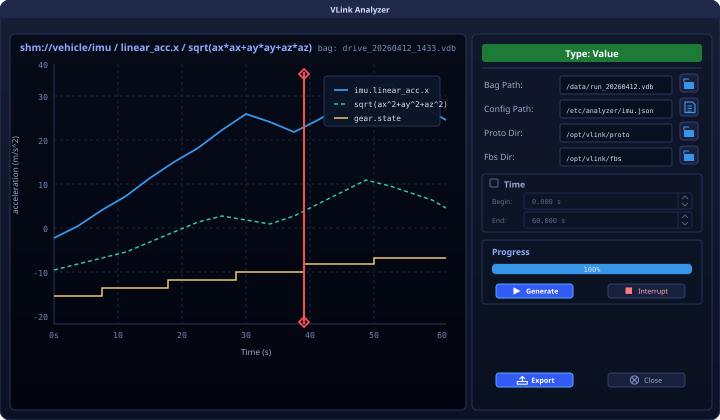
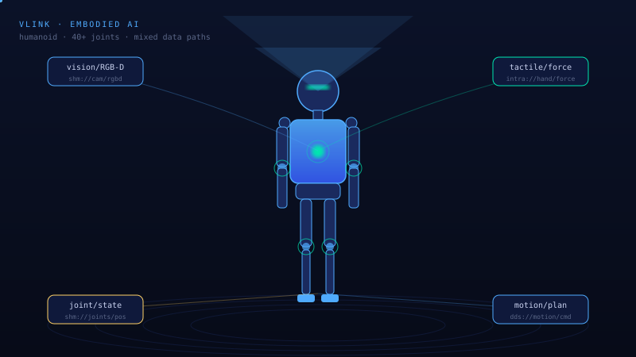

实时 TUI
vlink-monitor
基于终端的交互式实时监控面板，持续显示频率、速率、丢包率、时延；选中 URL 后按 Enter，会直接切入对应消息解析界面，网页示例按 monitor -loc 的真实交互节奏模拟。
source: cli/monitor/monitor.cc
VLink 用 Publisher / Subscriber、Client / Server、Setter / Getter 六类节点覆盖 Event、Method、Field 三种通信模型。业务处理代码可在后端间复用；地址、依赖、QoS 与运行时配置仍须满足所选后端的约束。

VLink 将通信节点 API、编译期序列化选择、录制回放、CLI 与可视化工具放在同一源码树中；实际可用能力取决于构建选项、平台和所启用的后端。
Viewer · Player · Analyzer 桌面 GUI · CLI 十件套 · Foxglove / Rerun Web 桥 · Bag 录制回放 —— 开发、调试、回归一站式。
序列化类型在编译期选择；Bytes 提供小缓冲与多种所有权语义，事件循环可选无锁队列。进程内直接路径和共享内存 loan 路径可减少拷贝，实际延迟与吞吐须在目标平台按消息大小和 QoS 实测。
Protobuf / FlatBuffers / CDR / POD / 自定义 —— 编译期根据类型签名自动选择，不用手写编解码。
源码包含 Linux · macOS · Windows · QNX · Android 的平台适配，并支持 x86_64 与 ARM64；具体后端与工具是否可用由平台依赖和构建配置决定。
URL scheme 用于选择传输后端。话题式后端通常可复用 path；SOME/IP 等专用后端则要求完整的合法 URL、依赖和运行时配置。
publish()、listen() 等接口。※ intra 与 dds(CDR) 不支持消息级加密 · someip 需 vsomeip 配置 · 详见 开发者文档
几行代码完成端到端 Pub / Sub。
构造 Protobuf 消息后通过 pub.publish() 送入 dds://sensor/imu。业务代码只关心数据本身，传输层由 URL 决定。
注册 sub.listen(...) 回调即可；回调执行上下文由所选后端及其运行模式决定，示例主线程只负责保持进程存活。
同时启动 publisher 与 subscriber，等待 DDS 完成匹配后开始收发。以下动画仅说明日志顺序，不代表固定延迟或吞吐。
Event / Method / Field 分别表达异步事件、请求响应与状态字段，并使用一致的节点生命周期与错误处理能力。
多对多异步分发。传感器数据、状态广播、日志流的首选。
// Publisher vlink::Publisher<Imu> pub("dds://sensor/imu"); pub.publish(imu); // Subscriber vlink::Subscriber<Imu> sub("dds://sensor/imu"); sub.listen([](const Imu& m){ ... });→
N:1 请求/响应。同步 / optional / 异步回调 / future 四种调用模式。
// Server vlink::Server<Req, Resp> srv("dds://math/add"); srv.listen([](const Req& q, Resp& r){ r.set_sum(q.left() + q.right()); }); // Client vlink::Client<Req, Resp> cli("dds://math/add"); // sync by-ref Resp r; cli.invoke(req, r, 1s); // sync optional auto maybe = cli.invoke(req, 1s); // async callback cli.invoke(req, [](const Resp& r){ ... }); // future auto f = cli.async_invoke(req);→
状态值的 set / get / listen 模型。晚加入 Getter 能否取得历史最新值取决于后端及其历史、持久性 QoS。
// Setter vlink::Setter<Gear> setter("shm://vehicle/gear"); setter.set({1, true}); // shm Field defaults to history depth 1; wait for delivery vlink::Getter<Gear> getter("shm://vehicle/gear"); getter.wait_for_value(std::chrono::seconds(1)); auto g = getter.get(); // Callback on every set() getter.listen([](const Gear& v){ on_gear(v); }); // Only fire on value change getter.set_change_reporting(true);→
完整工具链覆盖 info、list、monitor、eproto、efbs、parse、check、bag、bench、trigger；以下窗口按 cli/*.cc 的真实接口排布，重点平铺 monitor、list、check、bag，便于同时对照实时观测、拓扑发现、环境诊断与录制回放。
完整 CLI 工具体系包含 vlink-info、vlink-list、vlink-monitor、vlink-eproto、vlink-efbs、vlink-parse、vlink-check、vlink-bag、vlink-bench、vlink-trigger；当前网页重点演示 vlink-monitor -loc、vlink-list、vlink-check diag / env，以及 vlink-bag info / record / play / clone。monitor 在 TUI 内按 Enter 会直接切入对应解析界面。
基于终端的交互式实时监控面板，持续显示频率、速率、丢包率、时延；选中 URL 后按 Enter，会直接切入对应消息解析界面，网页示例按 monitor -loc 的真实交互节奏模拟。
通过 DiscoveryViewer 扫描当前网络中的活跃 VLink 进程与 URL，按进程展开 Publisher、Subscriber、Server、Client、Setter、Getter，适合快速确认节点是否上线、URL 是否一致。
覆盖 IP、组播地址、磁盘空间、CPU、内存以及关联进程运行状态；网页展示 diag 与 env 的代表性节选，实际项目会随构建选项增加检查项和环境变量。
网页仅演示 info、record、play、clone 四个子命令；示例严格保留必填 path 约束，其中 clone 使用 source_path 与 target_path。
桌面 GUI 与 Web 桥接工具，覆盖本地调试、录制分析与远程观测。




VLink 的 base 库不仅服务于通信节点 —— 日志、事件循环、定时器、线程池、任务图、对象池、字节缓冲、插件加载 …… 这些组件可单独引入，作为任何 C++ 实时工程的底座。
支持流式、格式化、printf 风格与 RAII 调用。内置日志实现由构建选项选择；自定义实现可通过 LoggerPluginInterface 在运行时加载。
单线程事件循环，支持普通或无锁任务队列，可挂载 Timer 与回调。循环内任务串行执行；跨线程共享状态仍需按调用场景同步。
多线程事件循环：多个 worker 共享同一任务队列，保留 post_task / exec_task 接口，从单线程无缝升级到并发。
单次 / 周期定时器，需附着到 MessageLoop 执行；与 DeadlineTimer 搭配可做超时控制。
哈希时间轮：O(1) 插入 / 删除，适合成千上万并发超时（会话管理、心跳、连接池保活）。
高精度秒表：可选 wall clock / CPU-active 时钟源，给 profiling 与任务延迟统计使用。
固定 worker 数的线程池，可选普通或无锁任务队列，并提供 post / invoke、future 与任务句柄接口。
DAG 任务图：precede / succeed 声明依赖，支持条件分支、环检测、DOT 导出。
RAII 任务调度包装：支持 delay_ms / priority / 启动超时 / 执行超时，并用 on_then / on_else / on_catch 流式链接结果回调。
通信消息统一载体：固定 128 B 对象 + 96 B 栈内小缓冲优化，五种所有权语义，内置 LZAV 压缩与 PMR 池化分配。
多生产者 / 多消费者无锁队列；MessageLoop 与 ThreadPool 选择 kLockfreeType 时使用，普通队列仍是可选实现。
运行时多态插件 —— 抽象 C++ 接口由共享库实现，dlopen / LoadLibrary 加载时做 ABI 与主/次版本校验。
线程安全对象池：预分配 + 自由列表 + 可配置 reset 策略；RAII 自动归还，减少热路径分配抖动。
按 CPU active time 与 wall time 的比值统计当前进程 CPU 使用率；CpuProfilerGuard 用于作用域内启停统计。
跨平台进程管理 + 信号处理 + 优雅退出钩子，供 CLI 工具与守护进程使用。
通信核心、可视化、录制回放、CLI、Proxy 监控与插件系统均在源码树中；可用组件取决于构建选项和第三方依赖。
Event / Method / Field 三模型 + 10 种传输矩阵 + 14 种序列化。
Viewer 桌面 GUI · Player 回放 · Analyzer 波形 · Foxglove / Rerun Web 桥。
.vdb / .vdbx (SQLite + LZAV) 与 .vcap / .vcapx (MCAP + Zstd, Foxglove 兼容)，按时间 / 大小分片。
消息级 AES-128-GCM，SecurityPublisher<T> 一行启用，支持自定义回调。
monitor · bag · list · check · info · parse · eproto · efbs · bench · trigger —— 10 件套开箱即用。
独立 ProxyServer 守护进程 + ProxyAPI 客户端，Controller / Listener 双角色，跨网段观测流量、注入数据、重放回放。
dlopen / LoadLibrary 动态加载，模板化 Plugin::load<T>() 实现运行时多态。兼容规则要求 major 相等，且插件 minor 不低于宿主所需 minor。VLINK_URL_PLUGINS 的完整值为 auto 时按需加载，为 none 或空值时关闭，其他非空值为显式预加载列表；模式值大小写不敏感。
从自动驾驶和机器人中的相机 / 点云大带宽链路，到局域网分布式通信、车载以太网集成，以及跨网段监控与 Web 可视化，VLink 都通过统一节点 API 配合不同 URL 后端完成部署切换。




ROS2 是包含节点、构建、包管理和机器人生态的完整框架；VLink 聚焦通信节点 API，并在同一源码树提供录制、CLI 与可视化工具。选择应以目标生态、平台和后端验证结果为准。
intra:// 直接/共享指针路径与 shm:// 显式 loan 路径可减少载荷复制※ 本表只说明项目定位与接口边界，不构成通用性能结论；请对目标版本、平台、消息类型、QoS 与依赖组合进行验证。
VLink 框架以 Apache 2.0 发布，并可按构建配置选择不同传输后端。每个后端及其第三方依赖都有独立的许可证、支持范围与运行时要求，合规性和供应链风险应针对实际交付组合分别评估。
Apache 2.0 开源 · 与开发者一起,让自动驾驶与具身智能的通信栈更轻、更快、更现代。
提 bug、求新特性、问问题 —— 最快的响应通道
thun-res/vlink/issues →商业合作 · 定制开发 · 深度支持
thun.lu@zohomail.cn →887246136
vlink
打开手机 QQ → 添加群 → 按群号搜索 → 输入验证口令即可加入。